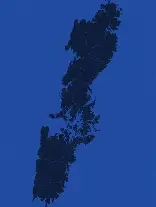

The game Ghost of Tsushima is based off of the real island of Tsushima
Tsushima (Japanese: 対馬, Hepburn: Tsushima) is an island of the Japanese archipelago situated in-between the Tsushima Strait and Korea Strait, approximately halfway between Kyushu and the Korean Peninsula. The main island of Tsushima, once a single island, was divided into two in 1671 by the Ōfunakoshiseto canal and into three in 1900 by the Manzekiseto canal. These canals were driven through isthmuses in the center of the island, forming "North Tsushima" (Kamino-shima) and "South Tsushima" (Shimono-shima). Tsushima also incorporates over 100 smaller islands, many tiny. The name Tsushima generally refers to all the islands of the Tsushima archipelago collectively Administratively, Tsushima is in Nagasaki Prefecture.
